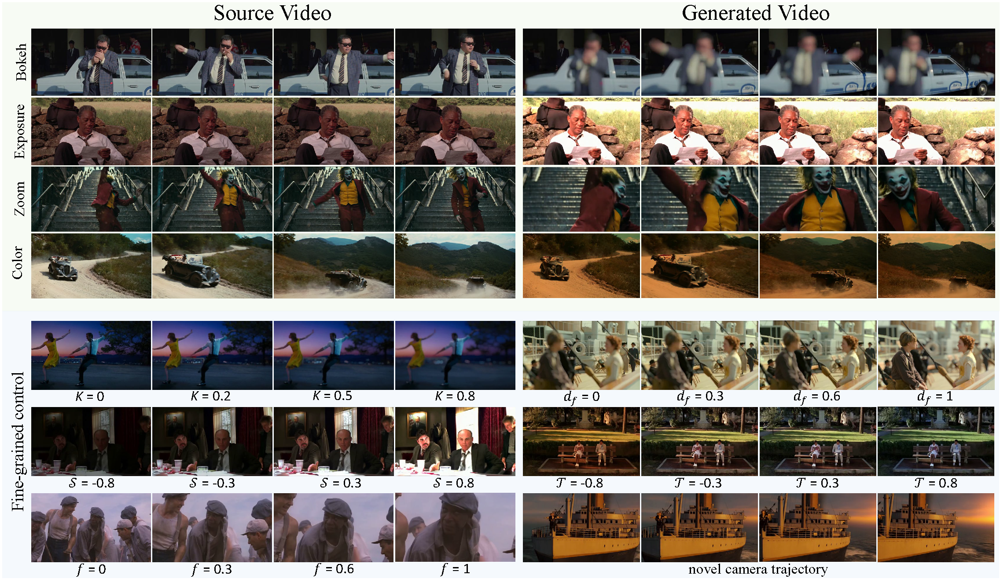
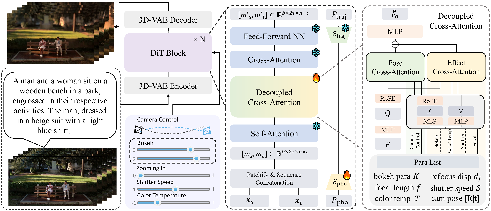
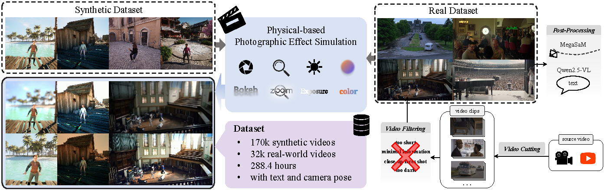

1HUST 2S-Lab, NTU 3SenseTime 4AI Lab
CineCtrl is the first video cinematic editing framework that provides fine control over professional camera parameters. We have five photographic effect parameters (Bokeh blur parameter, Refocused disparity, Focal length, Shutter speed, Color temperature) and one camera poses control parameter.

Cinematic storytelling is profoundly shaped by the artful manipulation of photographic elements such as depth of field and exposure. These effects are crucial in conveying mood and creating aesthetic appeal. However, controlling these effects in generative video models remains highly challenging, as most existing methods are restricted to camera motion control. In this paper, we propose CineCtrl, the first video cinematic editing framework that provides fine control over professional camera parameters (e.g., bokeh, shutter speed). We introduce a decoupled cross-attention mechanism to disentangle camera motion from photographic inputs, allowing fine-grained, independent control without compromising scene consistency. To overcome the shortage of training data, we develop a comprehensive data generation strategy that leverages simulated photographic effects with a dedicated real-world collection pipeline, enabling the construction of a large-scale dataset for robust model training. Extensive experiments demonstrate that our model generates high-fidelity videos with precisely controlled, user-specified photographic camera effects.

Overall framework of CineCtrl, which is built upon the Wan2.1 T2V framework, and extended to a V2V model. To enable camera control, we inject both camera trajectory and photographic parameter signals into the DiT block. Through our proposed Camera-Decoupled Cross-Attention mechanism, we disentangle these two signals to achieve accurate and independent control.

We generate training pairs by applying our proposed photographic effect simulator to both a synthetic dataset and a high-quality real-world dataset, which we curated from web and movie sources through a shot detection and filtering pipeline.
@article{sun2025generative,
title={Generative Photographic Control for Scene-Consistent Video Cinematic Editing},
author={Sun, Huiqiang and Shen, Liao and Peng, Zhan and Wang, Kun and Wu, Size and Zang, Yuhang and Liu, Tianqi and Huang, Zihao and Zeng, Xingyu and Cao, Zhiguo and others},
journal={arXiv preprint arXiv:2511.12921},
year={2025}
}